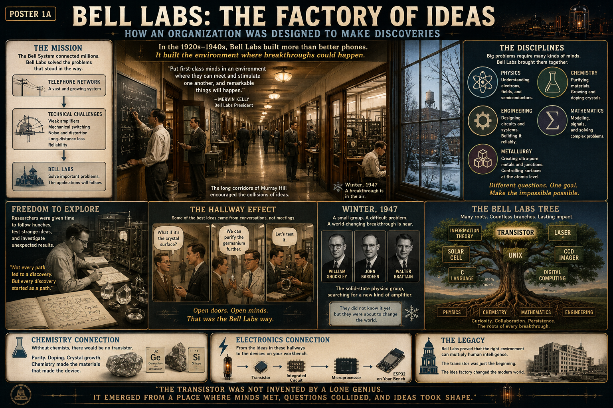

Current creates magnetism
When current passed through a copper coil, it created a magnetic field. That field attracted an iron armature.
Poster 1 · Before Semiconductors
A lesson for Klins on the machines that clicked, glowed, amplified, switched, routed telephone calls, operated early computers, and prepared engineering for the transistor age.

An electrical signal operated a mechanical switch.
When current passed through a copper coil, it created a magnetic field. That field attracted an iron armature.
The armature physically moved, carrying one or more electrical contacts with it.
The contacts opened or closed another circuit. A small control signal could therefore switch a separate load.
The relay modules and RB5 relay on our bench are descendants of this same mechanism. A Raspberry Pi or transistor driver energizes a coil; the magnetic field moves contacts; and those contacts control a separate circuit. The principle is old, but still extremely useful.
Vacuum tubes moved switching and amplification from mechanics into electron flow.
Heating the cathode gave electrons enough energy to leave its surface inside an evacuated glass envelope.
A small voltage on a grid controlled a much larger electron flow between cathode and plate.
That controlled flow made radio, long-distance telephony, radar, audio amplification, and electronic computation possible.
Different internal structures were optimized for different jobs.
Allowed current mainly in one direction and was used for rectification.
Added a control grid for amplification and switching.
Added grids to improve gain, stability, and high-frequency performance.
Handled larger current and power for transmitters, audio output, and industrial control.
Large relay systems automatically built temporary electrical paths between callers.
The exchange detected states, stored temporary conditions, made routing decisions, and controlled outputs. It was a large-scale information-processing machine built from coils, contacts, wiring, and timing.
Vacuum tubes made logic much faster than relays, but at enormous physical cost.
Tubes had no mechanical armature to move, so they could switch far faster than relays.
Thousands of tubes required racks, wiring, cooling, power supplies, and constant maintenance.
ENIAC demonstrated that large electronic systems could calculate at unprecedented speed, but it also showed the limits of building computers from thousands of hot, failure-prone devices.
The space age began with technology inherited from the relay and vacuum-tube era—but spaceflight demanded something better.
Vacuum-tube transmitters and receivers enabled radar systems powerful enough to detect aircraft, measure range, track high-speed targets, and develop the precision techniques later needed for rockets and spacecraft.
Long-range radio, telemetry, command links, and tracking networks grew from tube-based communication systems. Early rocket and space programs depended on these technologies before solid-state equipment became dominant.
Early electronic computers calculated ballistic paths, processed tracking data, and helped engineers model vehicles whose motion was too complex for hand calculation alone.
Long before the Moon landing, engineers were learning how electrical signals could represent position, timing, error, and corrective action—the foundations of automatic guidance and control.
A room-sized computer could support a mission from the ground, but it could not ride inside a small spacecraft. Every kilogram, watt, and failure point mattered.
By the Apollo era, transistorized and integrated-circuit electronics made compact onboard guidance practical. The Apollo Guidance Computer used thousands of integrated logic circuits rather than racks of vacuum tubes.
Space did not merely benefit from miniaturization—it demanded it. Vacuum tubes could amplify and switch, but spacecraft needed devices that were smaller, cooler, lighter, more shock-resistant, more reliable, and far less power-hungry. The endeavor to reach orbit and the Moon turned the transistor and integrated circuit from promising inventions into strategic necessities.
Three stages in the shrinking of electronic control.
A room-scale vacuum-tube computer that proved high-speed electronic calculation was possible.
A compact onboard computer built from integrated logic, designed for navigation and spacecraft control.
A pocket-sized microcontroller containing processing, memory, timers, communications, and millions of transistors—available for ordinary experiments.
Relays and tubes worked, but scaling them created severe problems.
Large systems occupied rooms and required extensive wiring.
Tube filaments and power circuits generated substantial heat.
High voltage and continuous heater current consumed large amounts of energy.
Contacts wore, coils failed, filaments burned out, and tubes aged.
Relays were limited by mechanical motion.
Large systems required technicians, spares, testing, and constant repair.
Complex systems were expensive to build, power, cool, and maintain.
Adding more functions meant adding more physical devices and more failure points.
The breakthrough arrived after generations of switching, amplification, and materials research.
Electromagnets repeated signals and operated remote circuits over long distances.
Relays and electromechanical selectors automated increasingly large communication systems.
Electronic amplification and switching enabled broadcasting, telephony, radar, control, and computing.
Machines such as ENIAC showed both the power of electronic logic and the limits of vacuum-tube scale.
John Bardeen, Walter Brattain, and William Shockley became central figures in the invention and development of the transistor.
Thousands of transistor-based logic elements could now fit into compact computers suitable for guidance and control.
The transistor was not a sudden replacement for ignorance. It inherited a world already fluent in coils, contacts, electron flow, amplification, switching, telecommunication, radar, automatic control, and computation. Its revolution was to compress those established functions into a solid-state device small enough to scale.